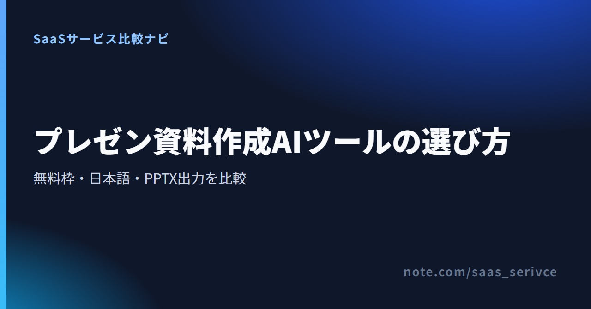

AIにプレゼン資料を作らせても、そのまま仕事で使えるとは限りません。日本語の原稿を扱えても操作画面は英語だったり、無料で生成できてもPPTXに書き出す段階で条件が付いたりします。見栄えのよいスライドができても、社内のPowerPointテンプレートへ移した途端にフォントや配置が変わることもあります。
ここではGamma、Canva、Beautiful.ai、Preziの4製品を、無料枠、日本語、PPTX出力、デザイン方式に分けて整理します。いずれも未契約のため公式情報を基に整理し、登録後に自分の原稿で確かめたい点も添えました。
無料で試す順番に迷ったら、日本語で構成案の生成からPPTX出力まで始められるGamma、写真や図版、ブランド素材まで同じ画面で整えられるCanvaが第一候補です。 レイアウト調整をAIに任せたい場合はBeautiful.ai、ズームを使った非線形の見せ方が目的ならPreziが合います。
ここでの結論は、無料枠で相性を確かめる順番です。日本からの支払い、請求書、チーム向け契約の確認範囲は4製品でそろっていないため、有料契約の条件は候補を絞ってから確かめてください。
Gammaはクレジットカード不要のFreeから始められます。まず普段使っている日本語原稿で生成し、PPTXに書き出した後の修正量とロゴの表示を見てください。
日本語、PPTXでの再編集、無料枠の出口、デザインの直し方の順に見ると、自分の作業環境に合う製品を選べます。 「AI搭載」という言葉だけでは、この4点は判断できません。
登録前は次の順番で条件を整理します。
日本語対応には、文章生成、メニューや設定画面、問い合わせ窓口という3つの意味があります。Gammaは公式サイト、アプリUI、日本語版ヘルプセンターに対応し、Canvaにも日本語UIと日本向け料金ページがあります。Beautiful.aiのUIは英語ですが、AIによる翻訳機能があります。Preziはオンラインエディターを含むUIを日本語へ切り替えられ、日本語ヘルプセンターも利用できます。
複数人で使うなら、資料の生成品質だけでなく、設定や請求管理を日本語で進められるかも見ます。英語UIを選ぶ場合は、社内向けの操作手順が必要です。
「PPTX対応」は、PowerPointで同じ見た目を再現できるという意味ではありません。GammaはFreeでもPPTXに書き出せ、Canvaも無料プランから対応します。ただしCanvaでは、変換時にフォントやレイアウトがずれたり、アニメーションが再生されなかったりする場合があります。Beautiful.aiの編集可能なPowerPoint出力はPro、Team、Enterpriseが対象です。
納品形式がPPTXなら、1〜2枚を書き出し、テキスト、フォント、改行、図形、アニメーションを普段の環境で直せるかを見ておきます。
無料枠では、生成回数、スライド枚数、ロゴ、出力形式、クレジットの補充時期を見ます。Gammaは登録時400クレジットで毎月の補充なし、Canva Freeは月間共有利用枠でAI機能を最大20回まで使えます。Beautiful.aiには合計100スライドまでのBasicがあり、Prezi BasicにはAIクレジット500が付きます。期間限定トライアルは、これらの継続無料枠と分けて考えます。
Gammaは構成、文章、ビジュアルをまとめて作る一気通貫型、Canvaは素材も扱う総合デザイン型です。Beautiful.aiは300以上のSmart Slideによるレイアウト調整、Preziはズームで全体と詳細を行き来する演出に軸があります。「構成」「素材」「配置」「演出」のどこを任せるか決めてから選びます。
4製品は、資料作成を任せる範囲が異なります。 順位は付けていないので、下書き生成、素材編集、レイアウト調整、演出のうち、いちばん時間をかけている工程に合わせて選んでください。
GammaのFreeはクレジットカード不要で、登録時に400クレジットが付与されます。毎月の補充はなく、1回のプロンプトで作成できるスライドは最大10枚です。
無料のままPDF、PPTX、PNG、Googleスライドへ出力できます。Freeで書き出した資料にはGammaのロゴが入り、有料プランへ移ると削除できます。
公式サイトとアプリUIは日本語に対応し、日本語版ヘルプセンターも用意されています。ただし、問い合わせ窓口の対応言語までは日本語UIと同じ条件とは限りません。チーム導入では、操作と問い合わせを分けて見ておきたいところです。
無料枠では、10枚以内の普段に近い資料を作り、PPTX変換後の修正量とロゴの扱いを確認してください。
CanvaはAIでスライドを作るだけでなく、テンプレート、写真、動画、音声素材を同じ編集画面で組み合わせられます。無料プランでは5GBのクラウドストレージ、160万点以上のテンプレート、470万点以上の写真・動画・音声素材が案内されています。
Canva FreeのAI機能は月間共有利用枠で最大20回まで使え、枠は毎月リセットされます。複雑な処理では、実際の利用回数が20回未満になる場合があります。生成回数に加えて、たたき台をテンプレートや素材で整える流れまで試しておくと安心です。
日本語UIと円建ての料金ページがあり、Freeを含む全プランでPPTXへ書き出せます。ただしPowerPointへ変換すると、フォントやレイアウトがずれたり、アニメーションが再生されなかったりする場合があります。社内指定のフォントや複雑な動きを使う資料なら、早めに一度書き出して確かめます。
無料プランでは、AI生成の回数だけでなく、使いたい素材が無料対象か、PowerPointへ移した後も編集を続けられるかを見てください。
Beautiful.aiは300以上のSmart Slideレイアウトを備え、内容に合わせた配置の調整に重点を置いています。公式料金ページに掲載された有料プランではAI生成が無制限です。PowerPointを取り込めますが、編集可能なPowerPointへの書き出しはPro、Team、Enterpriseが対象になります。
無料のBasicはアカウント合計100スライドまで使えます。初回の14日間Proトライアルはカード登録が必要で、期間内に解約しなければ自動課金されます。BasicとProトライアルは別の入口です。編集可能なPPTX出力まで試すなら、トライアルの終了日を先に控えておきます。
公式サイトと操作画面は英語ですが、AIによる翻訳機能があります。英語UIで編集や契約管理を続けられるかも、導入前の判断材料です。
まずBasicでレイアウト方式を確かめ、編集可能なPPTX出力が必要なら14日間のProトライアルでPowerPointとの往復まで試してください。
Preziは全体像から詳細へズームし、情報の関係を見せる用途に向きます。一般的な社内報告より、講演や製品紹介で視線の動きを演出したいときの選択肢です。
無料のBasicにはAIクレジット500が付き、作成できるプレゼンは最大5件です。有料プランには14日間の無料トライアルがあり、終了後は自動で課金されます。
Basicと有料トライアルは別の入口です。オンラインエディターを含むUIとヘルプセンターは日本語に対応していますが、問い合わせ言語は案内されていません。PPTXへの書き出しもできますが、ズーム演出はフレームごとの静的なPowerPointスライドに変わります。利用できるプランは案内ページに明記されていないため、PPTX納品が必須なら契約前に出力可否を確かめます。
Basicでは5件の上限内で発表の流れを作り、有料トライアルへ進む前に自動課金の時期を把握してください。
4製品とも継続無料の入口がありますが、使える量とPPTXの条件が異なります。 Beautiful.aiのBasicと14日間Proトライアル、PreziのBasicと有料トライアルのように、無料プランと期間限定トライアルを分けて判断します。
Gammaでは400クレジットを使い切る前に、10枚以内の実務に近い資料でPPTX出力とロゴの扱いまで確かめておきます。
Canva FreeのAI機能は月間共有利用枠で最大20回、毎月リセットされます。複雑な処理では20回未満になる場合もあります。通常のデザイン編集とPPTX出力は、このAI枠と分けて考えます。
編集可能なPPTXを無料で試す入口は、合計100スライドまでのBasicではなく、14日間のProトライアルです。まずBasicでSmart Slideの方式を見て、PowerPointとの往復が必要な場合だけ、カード登録と自動課金を伴うトライアルへ進みます。
Prezi Basicは月額無料ですが、作成できるプレゼンは最大5件です。有料プランの14日間トライアルは、終了後に自動課金され、その後は契約周期に応じて更新されます。
海外SaaSの経理処理や税区分は契約主体によって扱いが変わるため、必要に応じて税理士に確認してください。
PPTXに対応していることと、PowerPointで思いどおりに直せることは別です。 本番資料を作る前に、テキスト、フォント、改行、図形、アニメーション、ロゴの6点を確認します。
Gammaでは、顧客へ渡す資料にFree出力のロゴが残ってよいかを先に決めます。そのうえで短い資料をPPTXへ書き出し、フォントと改行の修正量を見ます。
Canvaでは、社内フォント、ページ番号、ロゴ位置、グラフを含む短い資料で変換を試します。見た目に加えて、その発表にアニメーションが要るかどうかも決めておきます。
Beautiful.aiの編集可能なPowerPoint出力はPro、Team、Enterpriseが対象です。14日間のProトライアルでは、文字、図形、配置をPowerPoint側で選び直せるかまで確かめます。
PreziにもPPTX出力はありますが、各フレームが静的なスライドになり、ズーム演出は引き継がれません。Prezi上で発表するのか、PPTXで納品するのかを先に決め、後者なら利用プランで出力できることを契約前に確かめます。
4製品のデータ利用や管理機能を同じ条件では比較できないため、無料評価では機密情報を使わず、生成物を人が照合します。 本番利用は会社の規程と契約プランの条件を確認してから始めます。
評価用の原稿から顧客名、個人情報、未公開の売上、契約内容を外し、固有名詞は架空の名称へ置き換えます。
売上、成長率、日付、製品名、引用文は、PPTXへ出力した後に元資料と照合します。
社外配布前に、生成画像、既存素材、テンプレート、フォントの利用条件を分けて確認します。
無料枠と日本語対応は本文で整理したため、ここではPowerPointとの役割分担と業務利用の条件に絞ります。
構成案の作成やブラウザ上の編集には使えますが、既存テンプレート、指定フォント、複雑な図形、アニメーションを使う仕事ではPPTX出力後の修正が残ります。1本の資料を生成し、社内テンプレートへ合わせるところまで試して判断します。
生成物、素材、テンプレート、フォント、入力データの条件を分け、サービス規約と社内ルールを確認します。顧客へ納品する提案書では素材の利用範囲と再配布条件、未公開情報を扱う場合は契約プランと管理設定まで見ます。